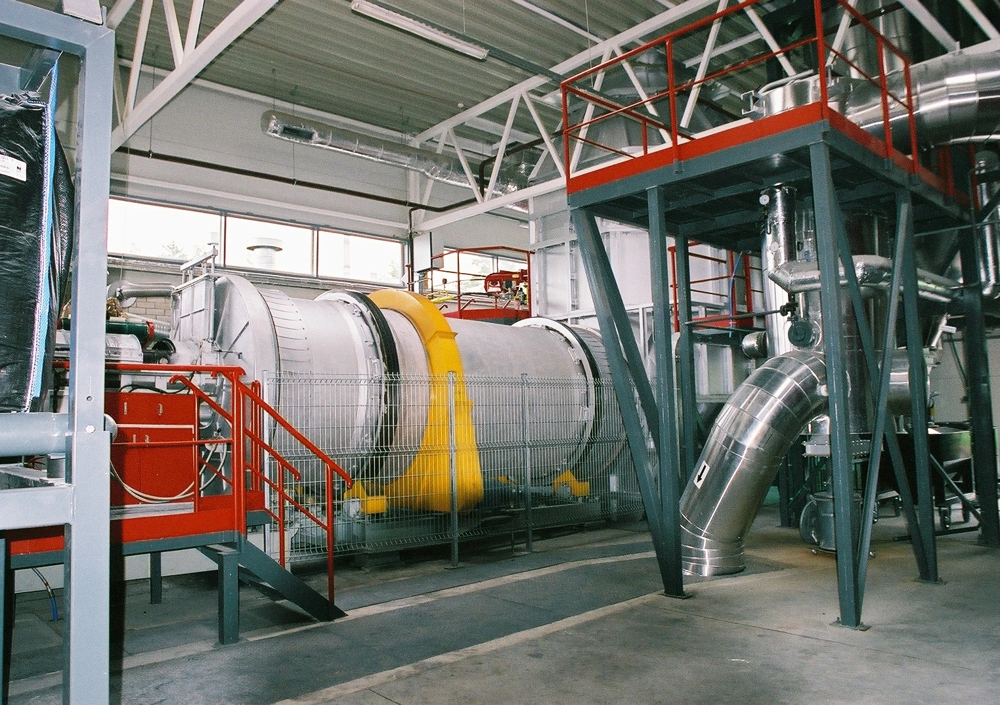
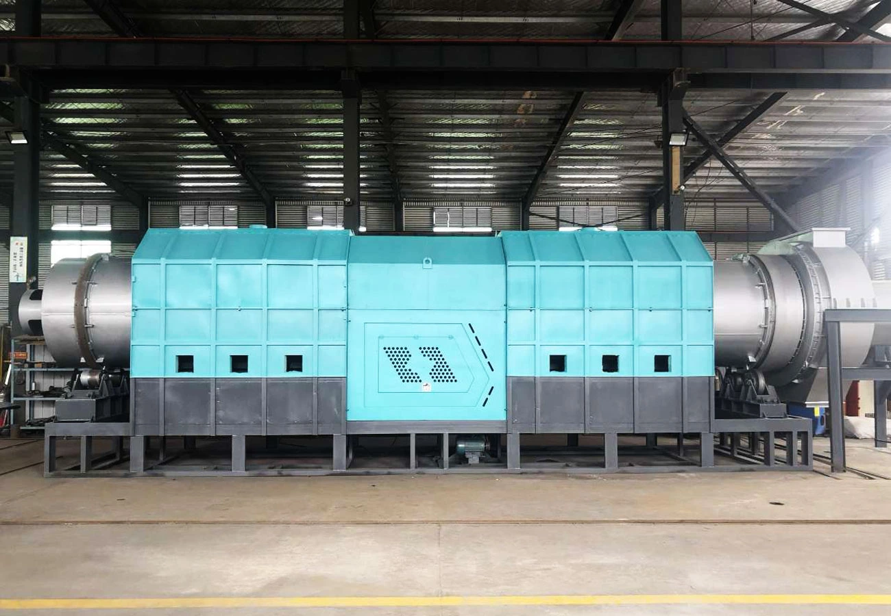
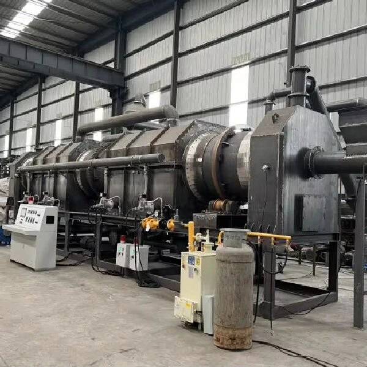
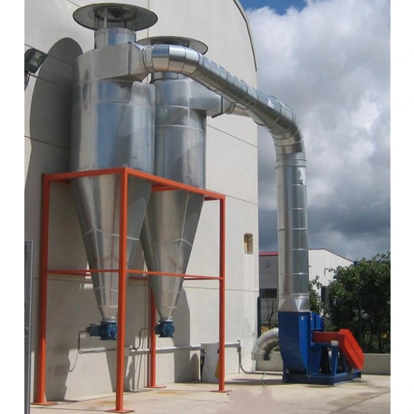
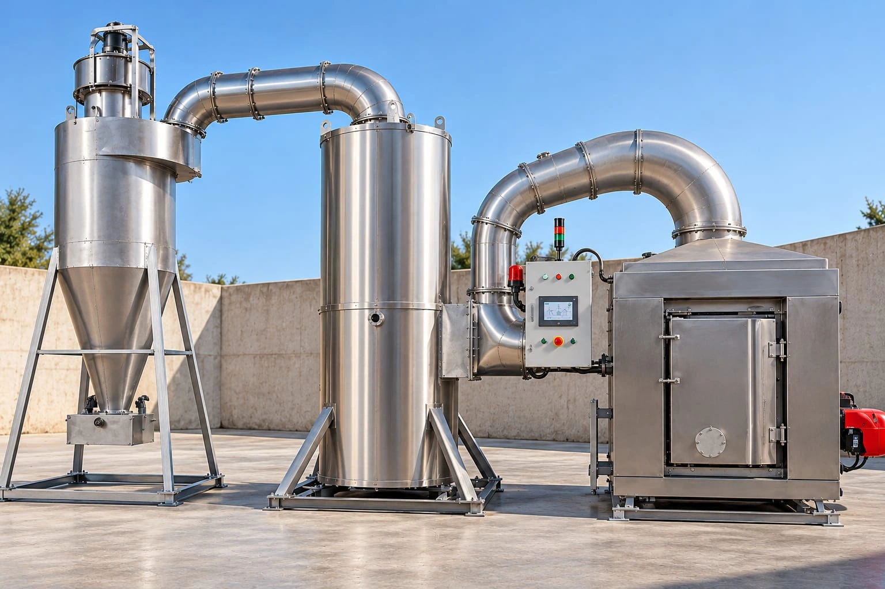

Équipements au catalogue
Quatre familles de solutions, du traitement thermique aux systèmes logistiques.
Des solutions industrielles conçues au Maroc, pour transformer vos défis en installations concrètes.
Traitement des déchets, valorisation de la biomasse, filtration et équipements sur mesure. De l’étude à la mise en service, JABRI X accompagne chaque étape de votre projet.

Sélectionnez votre secteur pour découvrir les applications et les équipements à étudier.

Photographie d’illustration · Beston GroupCarbonisation et pyrolyse transforment la matière organique selon les objectifs du projet. Le catalogue présente des solutions pour le charbon, le biochar, la bio-huile et les gaz.
JABRI X développe des équipements thermiques et métalliques pour transformer la matière, traiter les déchets et accompagner les activités de production au Maroc.
L’entreprise & notre approche →Quatre familles de solutions, du traitement thermique aux systèmes logistiques.
Matières, capacité, implantation, alimentation et conditions d’exploitation.
Conception, mise en service, formation et suivi technique au Maroc.

03Biomasse · biochar, bio-huile et gaz
→Traitement thermique continu
→
10Cyclones · filtres · laveurs de gaz
→ 13
13Stockage · mélange · traitement
→ 11
11Manutention de matériaux en vrac
→ 16
16Métaux non ferreux · petites capacités
→Photographies d’illustration d’équipements similaires. Chaque configuration est définie selon votre projet. Crédits photos
Donner une nouvelle valeur à la biomasse.

Maîtriser le traitement thermique des déchets.
Transformer la matière. Traiter les émissions.
Organiser les flux de votre installation.

G.F.A 50 · TRAITEMENT DES DÉCHETS MÉDICAUXConçu pour les hôpitaux, cliniques, centres de santé et laboratoires, le G.F.A 50 associe une double chambre de combustion à un système intégré de traitement des gaz.
Comprendre vos matières, vos volumes, votre site et vos objectifs pour définir une configuration adaptée.
Préparer les conditions d’implantation et accompagner le démarrage de votre équipement.
Transmettre les bons gestes d’exploitation, de sécurité et de maintenance courante.
Assurer un suivi de proximité, du diagnostic à l’identification des pièces de rechange.
Nature, composition, état physique et volumes estimés : nous partons de votre usage réel.
Espace, accès, électricité, eau et organisation des flux guident l’étude d’implantation.
Conduite de l’installation, formation et maintenance sont intégrées à la réflexion.
Explorez les caractéristiques des équipements, les conditions d’installation et l’accompagnement JABRI X.
Chaque étude commence par les bonnes informations. Notre équipe vous accompagne pour les réunir.
Précisez la nature des matières ou déchets, les volumes estimés, leur état physique, le rythme de fonctionnement souhaité et le lieu d’implantation. Des photos et plans du site peuvent compléter votre demande.
Le catalogue présente des familles de solutions. Le dimensionnement, les matériaux, l’alimentation, les options de contrôle et les accessoires sont étudiés selon les contraintes du projet.
JABRI X présente un accompagnement comprenant préparation de l’installation, mise en service, formation des opérateurs et transfert de compétences. Le périmètre est défini dans votre offre.
Ils dépendent de la configuration retenue, de la capacité, des accessoires et des conditions d’installation. Contactez JABRI X pour obtenir une proposition adaptée à votre besoin.
Les opérations de contrôle, de nettoyage et d’entretien sont organisées selon l’équipement et les conditions d’exploitation. JABRI X propose également assistance technique, diagnostic et accompagnement pour les pièces de rechange.
Contactez-nous pour une étude, une demande d’équipement ou un besoin d’assistance.
Présentez votre activité, vos matières et vos objectifs à l’équipe JABRI X.